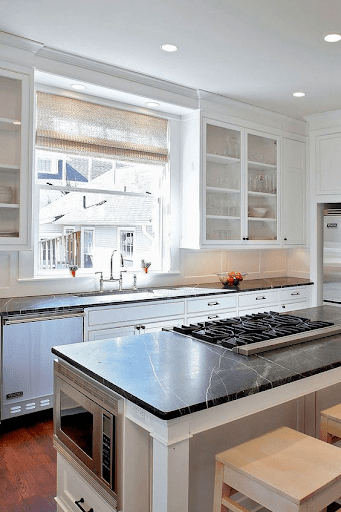

Gallery
Kitchen Countertop Designs


Durable, heat-resistant, and naturally elegant — Kota Stone countertops are a perfect fit for modern Indian kitchens.

Kitchen countertops demand materials that can handle heat, moisture, stains, and daily wear. Kota Stone is a natural limestone that offers exceptional durability while maintaining a clean and minimal aesthetic.
Unlike marble or granite, Kota Stone provides a non-glossy matte finish that hides scratches and stains, making it ideal for everyday cooking environments.
Withstands high cooking temperatures without damage.
Highly resistant to scratches and daily wear.
Performs well in wet kitchen environments.
More affordable than granite and marble.
Perfect for daily cooking environments where heat, oil, and heavy usage are common. Kota Stone performs reliably without visible wear.
Combines beautifully with modern cabinets and minimal interiors while maintaining a natural, premium look.
A cost-effective alternative to granite that still delivers durability and long lifespan.
Its matte texture and natural tone create a high-end, understated aesthetic preferred by architects.
| Feature | Kota Stone | Granite | Marble |
|---|---|---|---|
| Cost | Low | High | Very High |
| Maintenance | Very Low | Medium | High |
| Heat Resistance | Excellent | Excellent | Moderate |
| Stain Visibility | Low | Medium | High |
| Slip Resistance | High (Matte) | Low | Low |
Recommended thickness for kitchen countertops is 20–30 mm for durability and load-bearing strength.
Install on RCC or plywood base with proper leveling to avoid cracks and uneven load distribution.
Edges can be beveled or rounded for safety and aesthetics in modern kitchens.
Use cement slurry or epoxy to fill joints and ensure long-term stability.
Clean with normal water and mild detergent. No special chemicals required.
Light stains can be removed easily with simple scrubbing due to matte surface.
Unlike marble, Kota Stone does not require periodic polishing.
Lasts 40–50 years with minimal maintenance.
Yes, it is highly durable, heat resistant, and ideal for Indian cooking conditions.
No, its matte finish hides stains better than marble and polished surfaces.
Yes, Kota Stone is significantly more affordable while offering similar durability.
Yes, it has excellent heat resistance and can handle hot utensils easily.
| Application | Finish | Thickness |
|---|---|---|
| Kitchen Counter | Honed / Polished | 20–30 mm |
| Island Counter | Honed | 25–30 mm |
| Back Counter | Natural | 20 mm |